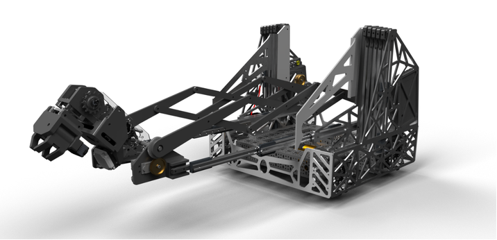
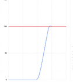
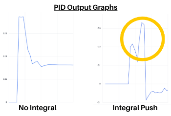
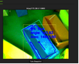
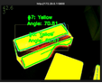

FIRST Tech Challenge 18844, co-captain and lead programmer
PID controlOdometryCNNJavaOpenCV


What it is
Competitive robotics with team 18844, ending at the 2025 FIRST World Championships. I was Co-Captain, Lead Software, and Main Driver
Localization
Autonomous scoring is entirely dependent on the robot knowing where it is. I built two-wheel odometry using dead wheels for translation, fused with IMU data for heading.
We combined an IMU gyro sensor, two odometry wheels to determine the location of the robot on a cartesian coordinate plane.
To achieve full field locaization, we applied a matrix transformation to rotate our position vector according to its heading. This means that the local coordinates that were originally relative to the robot are now relative to the field (global position)
Robot positioning
Precise and controlled movements are needed for sample and specimen scoring during autonomous. Solution: Three positional PID controllers are used in order to control the robot’s x, y, and heading powers. These local powers are converted to a global power which are then simplified into individual motor powers in order to move the robot to its target position.

Integral control
Robot fails to reach target position due to inadequate corrective force from kP and kD alone. Solution: To prevent overshooting, set the integral gain to only activate within a small activation range (10-20cm). This way, it helps make quick, minor adjustments with consistent kI proportions. Since the integral term adds up over time, it gives a strong push towards the target and then stops once reached

Camera vision
A camera and a custom trained neural detector model is used to calculate the respective x and y distances with the raw camera angles. Additionally, a custom-python snap-script is used to power an open-cv pipeline to determine sample angles with HSV thresholds.


Result
1st place Connect Award, Ochoa Division, at the 2025 FIRST World Championships.